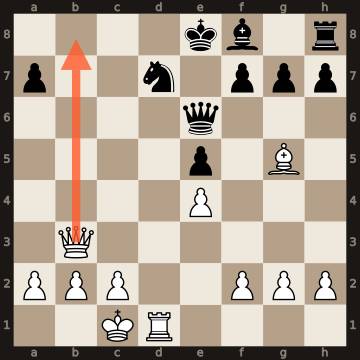

Telegram-бот · распознавание · 2026
Разбор партии по фото бланка
Шахматист фотографирует бланк партии и отправляет боту. Бот читает рукописные ходы, спорные переспрашивает кнопками и присылает разбор: где ошибка, что грозило и что делает сыгранный ход.
352 → 652полухода из 1 328 бот читает верно подряд с начала партии — на 13 эталонных бланках
NeurochessAIбот
- Игрок:Фото бланка
- Бот:
Прочитал партию: 17 ходов. Один ход записан неразборчиво.
- Бот:
10-й ход белых: как было?
10. К:b510. Кd5
- Бот:
Принято. Все ходы легальны, партия до мата. Разбор:
- Бот:

16. Фb8+!! Ферзь отдаётся, чтобы увести коня с d7: 16…К:b8 17. Лd8#.
Угроза соперника: 14…Фe6 предлагал размен ферзей на b3.
Рукописный бланк — самое слабое место: «b» и «d», «С» и «Л» легко спутать, а одна ошибка в начале ломает всю партию. Поэтому бот читает бланк дважды, независимо, и где прочтения расходятся, не угадывает, а спрашивает игрока. Каждый ход проверяется на легальность, позиции оценивают движки, а разбор пишет языковая модель по их оценкам.
Задача
Тренеру нужно разбирать много партий, а бланки пишутся от руки, в спешке и с сокращениями. Набирать ходы вручную долго, а готовые распознаватели путают похожие буквы и молча выдают партию, которой не было.
Главное правило бота — не выдумывать. Лучше задать один вопрос, чем разобрать чужую партию.
Как бот читает бланк
Цифры
- 454 → 264
- вопросов игроку на тех же 13 бланках — на 42 % меньше
- 59 → 48
- ошибок, которые прошли бы без вопроса
- 615
- автотестов
Как устроено
- 01
Два независимых прочтения бланка моделью Gemini 4; где они расходятся, игрок получает вопрос с двумя кнопками.
- 02
python-chess проверяет каждый ход на легальность: невозможный ход в разбор не попадёт.
- 03
Stockfish оценивает позиции, Maia-2 показывает, какой ход сыграл бы человек этого уровня.
- 04
Разбор пишет Claude Sonnet 5.5 по оценкам движков: угроза соперника, что делает сыгранный ход, где была ошибка.
- 05
Python 3.11, aiogram 3, PostgreSQL, Docker; бот работает на компьютере заказчика.
Нужно похожее?